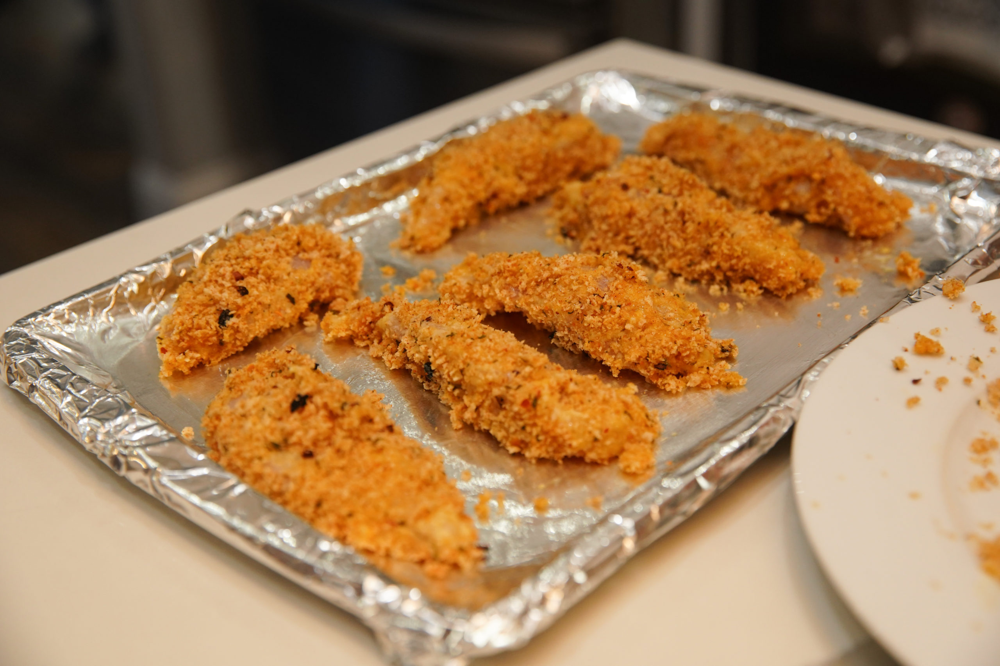

Panko Chicken

Description
Chicken is a staple dinner, but is even better when made with panko breadcrumbs! This tasty dish is sure to please even the pickiest of eaters!
Ingredients
- Chicken breasts
- Salt
- All purpose flour
- 3 eggs
- Panko breadcrumbs
- Butter
- Olive oil
Steps
- Cut the breasts in half ans season with salt.
- Coat the breasts in flour.
- Submerge the breasts in beaten egg.
- Cover the egg-coated breasts with panko breadcrumbs.
- Add butter and olive oil to cast-iron pan and let heat slightly.
- Fry the breasts, checking the temperature until they reach 165 degrees.